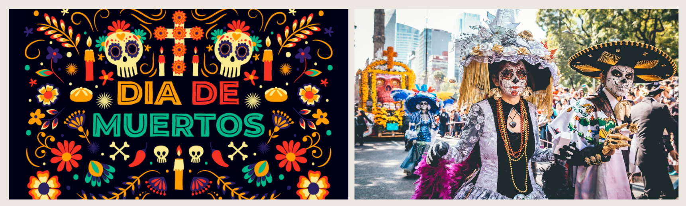
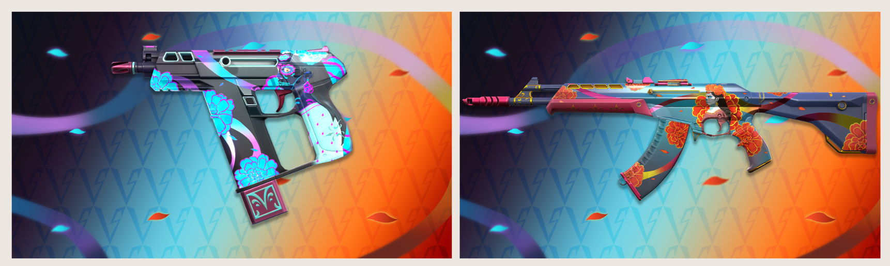

Nunca Olvidados é uma frase conhecida do espanhol mexicano que significa "nunca esquecidos", e que tem inspiração no feriado Día de los Muertos (Dia dos Mortos). No México, em comunidades mexicanas espalhadas pelo mundo
e em algumas partes da América Latina, esse feriado acontece entre os dias 1º e 2 de novembro e é uma forma de celebrar a vida e a morte das nossas famílias e entes queridos.

Geralmente, as famílias se juntam e preparam um pequeno altar (chamado de ofrenda), que é decorado com comidas, bebidas e fotos dos parentes que já se foram. Acredita-se que essas oferendas ajudam os espíritos a encontrarem o caminho de casa para visitar os membros da família que continuam vivos. Maquiagens e doces inspirados em caveiras, além de vários elementos com flor de muerto (cravo-de-defunto) são símbolos comuns desse feriado e têm se tornado mais populares nos últimos anos.
Para essa linha, decidiram usar duas técnicas de sombreamento: Uma transição entre duas texturas (com visual dia/noite). Noite ao passar por áreas com sombra e dia ao passar por áreas ensolaradas no jogo. Essa técnica já tinha sido desenvolvida para a linha Paraíso Invernal;
Uma projeção que colocaria na arma uma moça com uma flor atrás dela, do ponto de vista dos jogadores, em vez de apenas colocar a textura diretamente na arma. Essa é mais uma técnica que já tinha sido feita, porém dessa vez para a linha Quebra-cabeça).
E o que seria melhor que transmitir a celebração de vida e morte do Día de los Muertos em skins senão usando uma variante "clara" e outra "escura" que alternam conforme as sombras do mapa? Ao projetar uma textura diretamente na lateral da arma, os efeitos podem ficar bem diferentes se compararmos com a visão dos jogadores em 1ª pessoa com o visual mostrado no menu Coleções.